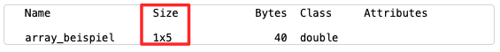

Komplexere Datentypen: Array, String und formatierte Ausgaben
Contents
Komplexere Datentypen: Array, String und formatierte Ausgaben¶
Einführung und Lernziele¶
Bisher haben wir vier verschiedene Datentypen kennengelernt:
Integer: ganze Zahlen
Float: Fließkommazahlen
String: Zeichenketten
Bool (Logical): Wahrheitswerte, d.h. wahr oder falsch
Damit können wir einzelne Objekte der realen Welt ganz gut abbilden. Mit einem String können wir den Namen einer Person erfassen, mit einem Integer das Alter der Person und mit einem Float die Körpergröße der Person gemessen in Meter. Mit einem Bool können wir beispielsweise erfassen, ob die Person zur Klausur zugelassen ist oder nicht. Was uns aber bisher fehlt ist, eine Sammlung von Namen oder eine Sammlung von Körpergrößen verwalten zu können.
Daher werden wir uns in diesem MATLAB Live Skript mit komplexeren Datentypen beschäftigen. Wir werden zunächst den Datentyp Array behandeln. Nachdem wir Eigenschaften diesen Datentyps betrachtet haben, werden wir das Thema String erneut aufgreifen. Zuletzt beschäftigen wir uns noch mit formatierten Ausgaben, um Zahlen und Texte schöner bzw. spezifischer anzeigen zu lassen.
Datentyp Array¶
In der Mathematik gibt es den Begriff des Vektors. Einen Vektor kann man als eine Zusammenfassung von Zahlen interpretieren. Beispielsweise fasst ein Vektor wie \(\vec{x}=(1.5, -2, 3)\) die Koordinaten eines Punktes zusammen. Oder in der Farbenlehre wird mit mit dem RGB-Wert (116, 144, 199) ein schönes Blau beschrieben (siehe https://www.color-hex.com/color/7490c7). Dabei stehen die drei Komponenten für die Farbanteile rot – grün – blau. Wir können aber auch eine Namensliste mit den Mitgliedern einer WG führen, z.B. [“Alice”, “Bob”, “Charlie”]. Damit verlassen wir die mathematische Welt der Zahlen und damit des Vektors, aber dennoch sind solche Listen für die Verarbeitung von Daten sehr wichtig. Wir brauchen daher einen verallgemeinerten Begriff eines Vektors, also ein Array.
**In der Informatik wird ein Datentyp als Array bezeichnet, der andere Daten vom gleichen Datentyp zusammenfasst. **
Die bisherigen Beispiele waren eindimensional, weil nur eine Eigenschaft benutzt wurde. Im ersten Beispiel die Eigenschaft Koordinate, im zweiten Beispiel die Eigenschaft Farbanteil und im dritten Beispiel die Eigenschaft Name. Im Alltag benutzen wir häufig zweidimensionale Sammlungen von Daten. Wenn Sie im Busfahrplan nachsehen wollen, wann der nächste Bus fährt, kommt es nicht nur auf die aktuelle Uhrzeit, sondern auch auf den Wochentag an. Wenn Sie ein Haushaltsbuch mit Einnahmen und Ausgaben führen wollen, werden Sie vielleicht in Excel eine Tabelle anlegen. In jeder Zeile steht der Posten (Miete, Handykosten, Essen, etc. ) und in den Spalten die Monate Januar, Februar, etc. Wenn die Informationen Zahlen sind, dann werden sie als Matrix dargestellt, z.B. als
\(A = \pmatrix{ 1 & 2 & 0 \cr -3& 1 & 0 \cr 2 & 0 & -1}\).
Jedoch ist auch die Einschränkung auf Zahlen nur für die Mathematik gegeben. In der Informatik können wir in solchen Tabellen auch andere Datentypen benutzen. Beispielsweise könnten die WG-Bewohner einen Putzplan vereinbaren:
\(\pmatrix{& \text{MO} & \text{DI} & \text{MI} \cr \text{Klo putzen} & \text{Alice} & \text{Bob} & \text{Charlie} \cr \text{Abwasch} & \text{Bob} & \text{Charlie} & \text{Alice} }\)
Dieser Putzplan ist zweidimensional, denn wir haben zum einen die Eigenschaft Wochentag und zum anderen die Eigenschaft Putzaktion.
Im Folgenden werden wir die Erzeugung von eindimensionalen und zweidimensionalen Arrays behandeln und lernen, wie man die Einträge in die Arrays manipuliert und ausliest.
Erzeugung von eindimensionalen Arrays¶
Ein Array wird in MATLAB durch eckige Klammern [ ] erzeugt. Sie finden das Zeichen für die eckige Klammer auf der Taste mit der 8, das Zeichen für die eckige Klammer auf der Taste mit der 9. Zusätzlich müssen Sie die Taste Alt Gr drücken, um die eckigen Klammern auf der Tastatur einzugeben.
Betrachten wir ein Beispiel. Hier wird ein Array mit den Elementen 1, 2, 3, 4, 5 (die Gemeinsamkeit ist, dass alles ganze Zahlen, also Integer sind) erzeugt und dann anschließend in der Variablen array_beispiel gespeichert. Mit der Funktion disp() lassen wir den Inhalt des Arrays ausgeben.
array_beispiel = [1, 2, 3, 4, 5];
disp(array_beispiel);
Mit dem Befehl whos können wir den Datentyp anzeigen lassen.
whos array_beispiel
Sie sollten in der Ausgabe jetzt Folgendes sehen:
Interessant ist dabei die Eigenschaft Size, die 1x5 anzeigt.
Aber warum zeigt MATLAB eine Size von 1x5 an und was ist das überhaupt? MATLAB ist die Abkürzung für Matrix Laboratory, also Matrix-Labor auf deutsch. Daher speichert intern MATLAB alles als eine Matrix. Sogar eine simple Zahl wie beispielsweise 3 wird von MATLAB als eine Matrix abgespeichert, mit einer Zeile und einer Spalte. Size gibt dabei die Dimension der Matrix an. Die erste Zahl steht für die Anzahl der Zeilen und die zweite Zahl für die Anzahl der Spalten. Zusammengefasst hat unser array_beispiel also eine Zeile und fünf Spalten.
Vergewissern wir uns noch einmal mit der simplen Zahl 3, die ja dann als Matrix mit einer Zeile und einer Spalte abgespeichert werden müsste, was das whos Kommando anzeigt:
x = 3;
whos x
Tatsächlich, Size = 1x1 wird ausgegeben.
Exercise 24
Erzeugen Sie ein Array mit den Elementen 2, 4, 6, 8, 10. Lassen Sie anschließend die Dimension des Arrays ausgeben.
Solution to Exercise 24
% Erzeugung Array
m = [2,4,6,8,10];
% Ausgabe der Eigenschaften
whos m
Ein Array speichert jedoch nicht nur Zahlen (Integer/Float), sondern man kann auch die anderen Datentypen in Form einer Sammlung speichern. Im nächsten Code-Beispiel sehen wir eine Namensliste und eine Liste mit dem Status “zur Klausur zugelassen?”.
namen = ["Alice", "Bob", "Charlie", "Dora", "Emil"];
zulassung = [false, true, true, true, false];
disp(namen)
disp(zulassung)
Exercise 25
Erzeugen Sie ein Array mit den Namen der Wochentage. Erzeugen Sie dann ein zweites Array mit der Anzahl an Semesterwochenstunden (Schulstunden), die Sie an diesem Wochentag haben. Lassen Sie beides zur Kontrolle anzeigen.
Solution to Exercise 25
% Eingabe: Array mit Wochentagen
woche = ["Montag", "Dienstag", "Mittwoch", "Donnerstag", "Freitag", "Samstag", "Sonntag"];
% Eingabe: Array mit Stundenanzahl pro Tag
unterricht = [4, 6, 8, 8, 6, 0, 0];
% Ausgabe
disp(woche);
disp(unterricht);
Erzeugung von zweidimensionalen Arrays¶
Bisher haben wir eindimensionale Arrays mit einer Zeile und mehreren Spalten erzeugt. Zur Trennung der Elemente in einem Array haben wir bei der Erzeugung das Komma benutzt. Probieren Sie aus, was passiert, wenn wir das Semikolon (= Strichpunkt) dazu benutzen.
array = [1; 2; 3; 4; 5];
disp(array)
Kurze Kontrolle mit dem whos-Kommando:
whos array
Jetzt haben wir ein Array mit 5 Zeilen und 1 Spalte erzeugt!
Halten wir fest:
Komma trennt Spalten
Semikolon/Strichpunkt trennt Zeilen
Damit können wir auch ein echtes zweidimensionales Array erzeugen. Achten Sie darauf, wie zuerst Kommas kommenund dann immer wieder ein Semikolon.
M = [1, 2, 3, 4, 5; 6, 7, 8, 9, 10; 11, 12, 13, 14, 15];
disp(M)
Und wieder kontrollieren wir mit whos:
whos M
Das Resultat ist ein echtes zweidimensionales Array mit 3 Zeilen und 5 Spalten.
Exercise 26
Erzeugen Sie ein 3x3-Array mit einer Eins auf der Hauptdiagonalen und lauter Nullen ansonsten. Lassen Sie Ihr Array anzeigen.
Solution to Exercise 26
% Erzeugung
A = [1, 0, 0; 0, 1, 0; 0, 0, 1];
% Ausgabe
disp(A);
Kurze Arrays wie beispielsweise eine Auflistung der Wochentage mit sieben Elementen oder die 3x3-Einheitsmatrix können wir schnell händisch erzeugen. Wir werden aber auch noch MATLAB-Methoden kennenlernen, mit denen man nach einem bestimmten Muster Arrays erzeugen kann.
Um Ihnen ein erstes Beispiel zu geben, schauen wir uns jetzt die Funktion randi() an.
Die MATLAB-Funktion randi() erzeugt ganzzahlige Zufallszahlen. Dabei gibt es mehrere Argumente:
X = randi( [min, max], zeilenanzahl, spaltenanzahl )
Also produziert X = randi( [1, 100], 1, 3) Zufallszahlen zwischen 1 und 100 in einer Zeile und mit 3 Elementen (Spalten).
X = randi( [1,100], 1,3 );
disp(X)
Weitere Details finden Sie in der MATLAB-Dokumentation: https://de.mathworks.com/help/matlab/ref/randi.html
Exercise 27
Erzeugen Sie ein zweidimensionales Array mit sechs Zufallszahlen, die zwischen 1 und 49 liegen. Lassen Sie das Array auch anzeigen.
Solution to Exercise 27
% Erzeugung Array mit Zufallszahlen
% Anmerkung: es gibt zwei Möglichkeiten, ein 1x6-Array oder ein 6x1-Array
X = randi( [1,49], 1,6);
% Ausgabe
disp(X);
Zugriff auf Elemente eines Arrays¶
Jedes Array hat einen Index. Man kann sich ein Array mit einer Sammlung von Daten wie eine Straße mit einer Sammlung von Häusern vorstellen. Um ein Haus in der Straße zu finden, hat es eine Hausnummer. Und das ist in der Informatik der Index, also die Position im Array, an der ein Element zu finden ist.
Mit dem Index können wir sozusagen nachsehen, welches Element an dieser Index-Position gespeichert ist. Das nennt man in der Informatik Lesezugriff. Oder wir können das Element an einer bestimmten Index-Position gegen ein neues Element austauschen. Das nennt man dann Schreibzugriff.
Um auf ein Element eines Arrays zugreifen zu können (egal ob lesend oder schreibend), verwenden wir runde Klammern und den Index. Wenn wir also beispielsweise das erste Element nachschlagen, also lesen wollen, dann sieht der Lesezugriff für ein eindimensionales Array also so aus:
% Erzeugung des Arrays
a = [11, 22, 33, 44, 55];
% Lesezugriff mit Index 1, also 1. Position
a(1)
Oder auf das dritte Element greifen wir folgendermaßen zu:
a(3)
Natürlich können wir die Elemente eines Arrays wieder in einer Variablen speichern oder sie anzeigen lassen.
a = [11, 22, 33, -77, 55];
viertes_element = a(4);
disp(viertes_element)
Exercise 28
Erzeugen Sie ein Array mit Schnapszahlen, also 11, 22, 33, … , 99. Lassen Sie das dritte, sechste und siebte Element ausgeben.
Solution to Exercise 28
% Erzeugung des Arrays mit den Schnapszahlen
a = [11, 22, 33, 44, 55, 66, 77, 88, 99];
% Ausgabe des 3., 6. und 7. Elements
disp(a(3));
disp(a(6));
disp(a(7));
Wenn wir auf Elemente eines zweidimensionalen Arrays zugreifen wollen, müssen wir wiederum die runden Klammern nutzten. Doch diesmal müssen wir zwei Indizes (=Hausnummern) angeben, nämlich die Zeile und die Spalte.
Bemerkung: es heißt ein Index im Sinular und viele Indizes im Plural.
Erzeugen wir erst einmal eine zweidimensionale Matrix mit zwei Zeilen und vier Spalten, also Dimension/Size 2x4.
A = [11, 22, 33, 44;
66, 77, 88, 99];
disp(A)
Das Element in der ersten Zeile und in der zweiten Spalte ist 22.
a_12 = A(1,2);
disp(a_12)
Dahingegen ist das Element der zweiten Zeile und der ersten Spalte 66:
a_21 = A(2,1);
disp(a_21)
Exercise 29
Erzeugen Sie ein zweidimensionales Array
\(\pmatrix{31 & 12 & 43 \cr 11 & 52 & 63\cr 21 & 32 & 13}\)
Lassen Sie alle Elemente der 1. Spalte ausgeben.
Solution to Exercise 29
% Erzeugung
A = [31, 12, 43; 11, 52, 63; 21, 32, 13];
% Ausgabe
disp(A(1,1))
disp(A(2,1))
disp(A(3,1))
Datentyp Character Array und String¶
Es wäre schön, die Ausgabe noch etwas schöner zu machen. Bisher haben wir nur die Möglichkeit, den Wert einer Variablen oder einen String mit der disp() Funktion anzeigen zu lassen.
So lassen wir den Wert von Pi ausgeben:
disp(pi)
Einen String geben wir folgendermaßen aus:
disp("Hallo!")
Sicherlich ist Ihnen schon aufgefallen, dass die input()-Funktion oder die disp()-Funktion auch Texte anzeigen, die zwischen zwei einfachen Hochkommata stehen und nicht durch Gänßefüßchen eingeschlossen sind.
disp('Hallo!')
Was ist denn eigentlich der Unterschied zwischen einfachen und doppelten Hochkommas?
Wenn wir doppelte Hochkommata verwenden, so handelt es sich um den Datentyp String. Das andere Konstrukt mit einfachen Hochkommas ist jedoch ein anderer Datentyp, ein Array von Einzelzeichen, ein sogenanntes Character Array. Den Unterschied sehen wir, wenn wir das whos Kommando anwenden:
string = "Hallo";
character_array = 'Hallo';
whos string
whos character_array
Der String “Hallo”hat die Dimension 1x1, das Character Array ‘Hallo’ hat jedoch die Dimension 1x5 (eine Zeile, fünf Spalten), weil es eine Aneinanderreihung von Zeichen ist. Damit haben wir jetzt auch relativ einfach die Möglichkeit, Texte zu manipulieren. Zuerst greifen wir auf einzelne Zeichen zu:
% Erzeugung Character Array mit Hallo
text = 'Hallo';
% Anzeige 3. Zeichen
text(3)
Nun ersetzen wir das kleine l durch ein großes L:
% Erzeugung Character Array mit Hallo
text = 'Hallo';
% Manipulation 3. und 4. Zeichen
text(3) = 'L';
text(4) = 'L';
% Anzeige gesamter Text
disp(text);
Exercise 30
Erzeugen Sie eine Variable mit einem Character Array, in der Ihr Vor- und Ihr Nachname mit Leerzeichen getrennt steht. Geben Sie zur Kontrolle Ihren Namen aus. In einigen Programmen sind Leerzeichen verboten. Ersetzen Sie daher in einem zweiten Schritt das Leerzeichen durch einen Unterstrich _ , indem Sie das Character Array manipulieren. Lassen Sie das manipulierte Array ausgeben.
Solution to Exercise 30
% Eingabe Character Array mit Namen
name = 'Simone Gramsch';
disp(name);
% Verarbeitung: ersetze Leerzeichen durch Unterstrich
name(7) = '_';
% Ausgabe
disp(name);
Sobald wir mit MATLAB Text einlesen, verarbeiten und ausgeben wollen, stellt sich die Frage, ob man besser ein Character Array oder einen String verwenden sollte. Für kürzere Texte sollte man das Character Array nehmen. Für längere Texte und vor allem, wenn Teile des Textes manipuliert werden sollen, ist der Datentyp String die bessere Wahl. Eine Übersicht zu den Manipulationsmöglichkeiten von Texten finden Sie hier: https://de.mathworks.com/help/matlab/characters-and-strings.html
Formatierte Ausgaben mit “fprintf”¶
Nun können wir eine Alternative zu disp() betrachten, die sogenannte fprintf()-Funktion. Die Dokumentation finden Sie hier: https://de.mathworks.com/help/matlab/ref/fprintf.html
Der wesentliche Unterschied zu disp() ist, dass wir Text und Zahlen mischen können. Die Basis dafür ist, dass der eigentliche Text ein Array ist und die Aneinanderreihung der einzelnen Zeichen manipuliert wird. Die wichtigste Manipulation ist dabei die Ersetzung von Platzhaltern.
Zuerst formulieren wir den gewünschten Text als Character Array und setzen Platzhalter mit einem Prozentzeichen ein, die dann durch Zahlen ersetzt werden.
fprintf('Dies ist ein Text mit Platzhalter %f !!!', 3.5)
Wenn Sie die obige Code-Zelle ausführen, sehen Sie, wie das Prozentzeichen mit dem f durch die Zahl 3.5 erzetzt wurde.
Wenn Sie die Ausgabe kontrollieren wollen, können Sie das folgendermaßen:
%f - gibt eine Fließkommazahl (Float) aus.
%.2f - gibt eine Fließkommazahl aus, nach dem Punkt steht die Anzahl der Nachkommastellen (hier also 2 Nachkommastellen), es wird gerundet,
%e - gibt die wissenschaftliche (Exponential-) Notation aus.
fprintf('Dies ist ein Text mit Platzhalter %.2f !!!', 0.056789);
fprintf('Dies ist ein Text mit Platzhalter %e !!!', 0.056789);
Es kann aber auch sein, dass für den Platzhalter ein String eingesetzt werden soll.
Dann muss der Platzhalter durch %s gekennzeichnet werden.
fprintf('Hallo %s, schoen, dass es Dich gibt!', "Gegenueber");
Gerade wenn man mehrere fprintf()-Anweisungen hintereinander ausführt, stellt man schnell fest, dass auch zusätzliche Formatierungsanweisungen wünschenswert sind.
\nsteht für newline und lässt den Cursor nach der Ausgabe in eine neue Zeile springen\tsteht für horizontaler Tabulator und lässt den Cursor zum nächsten Tab-Stopp springen.
fprintf('Liebe Studierende, \nin diesem Text ist ein newline versteckt.')
fprintf('Und außerdem ist hier\tein Sprung zum nächsten Tab-Stopp!')
Mehr Informationen finden Sie in der MATLAB-Dokumentation unter https://de.mathworks.com/help/matlab/matlab_prog/formatting-strings.html im Abschnitt Special Characters.
Exercise 31
Geben Sie \(\pi\) mit dem Text “Pi = …” aus, wobei die Punkte durch \(\pi\) ersetzt werden sollen. Probieren Sie folgende Formatierungen aus:
wissenschaftliche Notation
Fließkommazahl
Fließkommazahl mit 4 Nachkommastellen
Fließkommazahl mit 8 Nachkommastellen
Fließkommazahl mit 0 Nachkommastellen
Solution to Exercise 31
fprintf('Pi = %e', pi)
fprintf('Pi = %f', pi)
fprintf('Pi = %.4f', pi)
fprintf('Pi = %.8f', pi)
fprintf('Pi = %.0f', pi)
Zusammenfassung¶
In diesem MATLAB Live Skript haben wir uns mit dem Datentyp Array beschäftigt. Tatsächlich ist das nur ein kleiner Einstieg in die Welt der Arrays gewesen, da MATLAB wesentlich auf der Verarbeitung von Arrays basiert. Wir werden in den folgenden Skripten auch immer wieder auf diesen Datentyp zurückgreifen. Aber zunächst vervollständigen wir im nächsten MATLAB Live Skript das Thema Kontrollstrukturen, indem wir die sogenannten Zählschleifen einführen. Die Zählschleifen wiederum bauen auf Arrays auf.